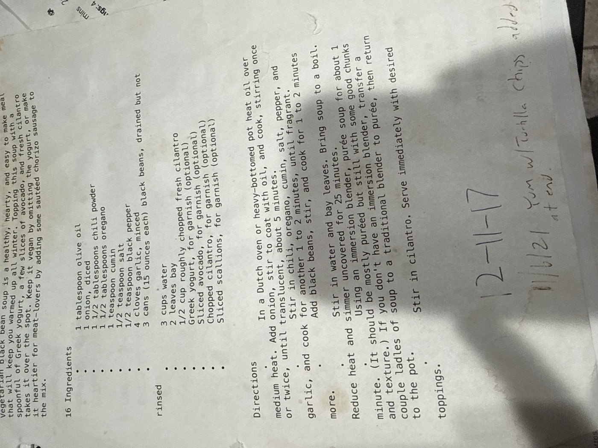

Vegetarian Black Bean Soup

A healthy, hearty soup that warms up all winter: three cans of black beans simmered with aromatics, then partially puréed with an immersion blender for a soup that's thick but still has good chunks and texture. Top with Greek yogurt, avocado, and cilantro — skip the yogurt to keep it vegan.
4servings
25 minsimmer time
Vegetariandiet
Ingredients
- 1 tbsp olive oil
- 1 onion, diced
- 1½ tbsp chili powder
- 1½ tbsp oregano
- 1 tsp cumin
- ½ tsp salt
- ½ tsp black pepper
- 4 cloves garlic, minced
- 3 cans (15 oz each) black beans, drained but not rinsed
- 3 cups water
- 2 bay leaves
- ½ cup roughly chopped fresh cilantro
- Greek yogurt, for garnish, optional
- Sliced avocado, for garnish, optional
- Chopped cilantro, for garnish, optional
- Sliced scallions, for garnish, optional
Method
- Cook the onion. In a Dutch oven or heavy-bottomed pot, heat the oil over medium heat. Add the onion, stir to coat with oil, and cook, stirring once or twice, until translucent, about 5 minutes.
- Bloom the spices. Stir in the chili powder, oregano, cumin, salt, pepper, and garlic, and cook for another 1–2 minutes, until fragrant.
- Add the beans. Add the black beans, stir, and cook for 1–2 minutes more.
- Simmer. Stir in the water and bay leaves. Bring the soup to a boil, then reduce heat and simmer uncovered for 25 minutes.
- Purée. Using an immersion blender, purée the soup for about 1 minute — it should be mostly puréed but still have some good chunks and texture. (No immersion blender? Transfer a couple ladles of soup to a traditional blender to purée, then return it to the pot.)
- Finish. Stir in the cilantro. Serve immediately with desired toppings.
From the card, 12/11/17: first made.
From the card, 11/6/21: "Yum, w/ tortilla chips added at end."
Meat-lovers' version (per the original card): make it heartier by adding some sautéed chorizo sausage to the mix.